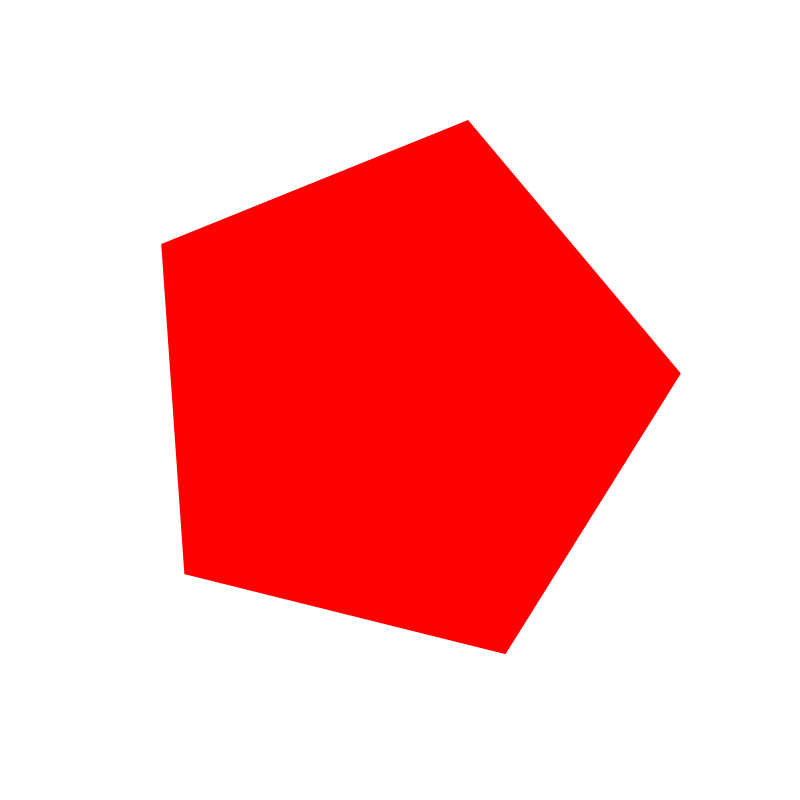

SVG
O que é SVG?
O SVG é um formato de arquivo usado para a criação de logotipos, ícones e elementos interativos, que se diferencia dos demais formatos de arquivo pela sua característica vetorial (ser desenhado a partir de um conjunto de coordenadas) e fica armazenado na DOM do HTML.
Qual é a vantagem do SVG?
Qualquer arquivo criado a partir da tecnologia tem sua qualidade mantida quando ampliado,podendo ser pesquisados, indexados, ampliados e compactados com alta qualidade e em qualquer resolução sem comprometer os resultados de visualização. Diferente de outros arquivos, como PNGs ou outros tipos de imagens rasterizadas, que restringem a qualidade da resolução à quantidade de pixels possível.
Além disso, SVG é suportado por todos os navegadores.
Quais são os principais elementos de um SVG?
Cada atributo no SVG pode ser estático ou animado.
Os atributos de largura e altura definem essas proporções da imagem. Uma string também deve ser criada para informar o formato da figura, que pode ser variado — círculo, retângulo, disco, linha ou o que o usuário desenhar (polyline) —, assim como as dimensões proporcionais no eixo x (cx) e no eixo Y (cy). O “r” corresponde ao raio de figuras elípticas.
Por qual motivo a borda do circle é referida como stroke?
Stroke significa traço.
De que forma o sgv é relevante para a indexação de páginas?
Vocábulos importantes para esse estudo:
- ratio: razão ou proporção matemática.
- core: essencial
- ARIA: conjunto de atributos especiais para a acessibilidade (aria attributes)
- viewport: em computação gráfica, é a porção de área visível de um plano
Exemplos de uso

Referências
https://developer.mozilla.org/en-US/docs/Web/SVG/Element/svg
https://rockcontent.com/br/blog/svg/
https://pt.stackoverflow.com/questions/330184/como-usar-imagens-svg